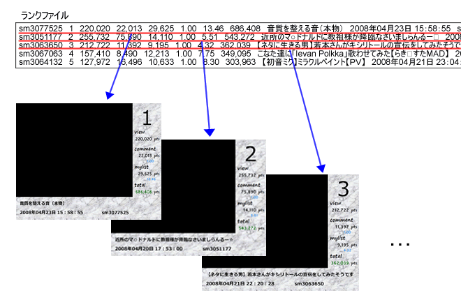
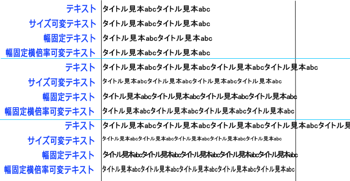
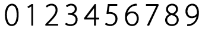

ランク画像作成機能は、集計したランキング情報から、フレーム画像（タイトルやポイント等が埋め込まれた画像）を作成する機能です。この機能は以下の2種類のファイルを使います。
・ランクファイル
ランキングの集計結果を格納したファイルです。「ランキング解析」機能や「タグ検索」機能であらかじめ生成するか、自分で用意します（自分で用意する場合は書式を見本と同じにしてください）。「ランクファイルのパス」でファイル名を指定します（デフォルトは rank.txt）。
・レイアウトファイル
ランキングの集計結果からフレーム画像を作成するときに、レイアウトを指定するためのファイルです。「レイアウトファイルのパス」でファイル名を指定します（デフォルトは layout.txt）。
「画像・動画作成」タブの「ランク画像作成」ボタンを押すと、ランク画像が生成されます。

レイアウトファイルの例
LineNumber 1 OutputSize 512 384 AntiAlias on BaseDir 画像 bg.jpg 0 0 512 384 テキスト #1 メイリオ 11 bold #000000 300 350 left テキスト四角形 #2 メイリオ 50 regular #000000 412 0 100 0 center top テキスト #3 Shruti 11 bold #000000 482 107 right テキスト #4 Shruti 11 bold #000000 482 162 right テキスト #5 Shruti 11 bold #000000 482 222 right テキスト #6 Shruti 9 bold #1E90FF 460 182 left テキスト #7 Shruti 9 bold #1E90FF 460 242 left テキスト #8 Shruti 11 bold #006400 482 282 right テキスト #9 メイリオ 11 bold #000000 10 320 left テキスト #10 メイリオ 11 bold #000000 10 350 left BaseDir made 画像 #1.jpg 0 0 411 312
ランク画像の作成では、レイアウトファイルを1行ずつ読み込み、「テキスト」や「画像」など、その行に書かれた「オブジェクト」の描画を行います。
使えるオブジェクト一覧
| テキスト | テキストを配置します |
| テキスト四角形 | テキストを、四角形を指定することで配置します |
| サイズ可変テキスト | テキストを配置します |
| 幅固定テキスト | テキストを配置します。指定した幅に収まるように間隔をつめます（Ver 1.09から） |
| 画像テキスト | 「画像テキスト」を配置します。画像テキストは数字などの画像を用意しておき、描画する機能です |
| 画像テキスト四角形 | 画像によるテキストを、四角形を指定することで配置します |
| 画像 | 画像を配置します |
他にも特殊コマンドがいくつかあります。
| LineNumber | ランクファイルを一度に読み込む行数。1画面に複数のランクファイルの情報を描画するときに使います |
| ReadRankRange | Ver 1.50 から ランクファイルの読み込み範囲。開始行(tab)終了行 で指定します。例：ReadRankRange(tab)5(tab)10 と書くとランクファイルの5行目から10行目まで読み込みます |
| OutputSize | 出力画像のサイズ。幅(tab)高さ で指定します |
| Filename | Ver 1.50 から 出力ファイル名を指定します。%d と書くと連番に置き換わります（＊）。#記法使用可 |
| FileType | Ver 1.50 から 出力する画像形式を指定します。"jpeg", "png", "bitmap", "gif", "tiff" に対応。動画の場合は無視されます。 |
| BackgroundColor | Ver 1.50 から 背景の色をHTMLカラーで指定します。BackgroundColor(tab)transparent と書くことで透過画像になります。 例：BackgroundColor(tab)#99FF33 |
| AntiAlias | その行より下の行のテキストに対して、アンチエイリアスをかけるかどうかを指定します |
| BaseDir | その行より下の行で、使用するフォルダを変更します |
Ver 1.70 から大文字小文字は無視されます。
（＊）Ver 1.70 から FileName で %04d と書くと 0001、0002、…のように上位桁を数字で埋めます。
テキスト(tab)描画文字列(tab)フォント(tab)フォントサイズ(tab)書体(tab)色(tab)左（右）(tab)上(tab)アラインメント
文字列を描画します。文字列中に ￥n （円マークは半角）と書くと改行されます。
| 要素名 | 説明 | 例 |
|---|---|---|
| 描画文字列 | 描画したい文字列（#記法が使えます） | 今回ポイント #1 |
| フォント | フォント名 | ＭＳ Ｐゴシック |
| フォントサイズ | フォントのサイズ（数字） | 12 |
| 書体 | regular 普通 |
bold |
| 色 | 色を HTML のカラーコードで指定 | #0000FF |
| 左（右） | テキストの左（右）端の座標（数字） | 300 |
| 上 | テキストの上端の座標（数字） | 350 |
| アラインメント | left 左寄せ right 右寄せ |
right |
テキスト四角形(tab)描画文字列(tab)フォント(tab)フォントサイズ(tab)書体(tab)色(tab)左(tab)上(tab)幅(tab)高さ(tab)アラインメント水平(tab)アラインメント垂直
文字列を描画します。描画位置を四角形によって指定します。基本的にテキストと同じです。以下は異なる部分です。
| 要素名 | 説明 | 例 |
|---|---|---|
| 左 | テキストを囲む四角形の左端の座標（数字） |
300 |
| 上 | テキストを囲む四角形の上端の座標（数字） | 350 |
| 幅 | テキストを囲む四角形の幅（横の長さ）（数字） | 100 |
| 高さ | テキストを囲む四角形の高さ（縦の長さ）（数字） |
20 |
| アラインメント水平 | left 左寄せ center 中央寄せ right 右寄せ |
center |
| アラインメント垂直 | top 上寄せ center 中央寄せ bottom 下寄せ |
bottom |
サイズ可変テキスト(tab)描画文字列(tab)フォント(tab)フォントサイズ(tab)書体(tab)色(tab)左(tab)上(tab)幅(tab)高さ(tab)アラインメント水平(tab)アラインメント垂直(tab)最小フォントサイズ(tab)フォントサイズのステップ
文字列を描画します。描画位置を四角形によって指定します。指定した四角形内に納まらない場合は、納まるまで自動でフォントを徐々に小さくします。書式はテキスト四角形とほとんど同じです。
| 要素名 | 説明 | 例 |
|---|---|---|
| フォントサイズ | 一番初めに指定するフォントサイズ |
12 |
| 最小フォントサイズ | フォントを徐々に小さくしていく際の最小フォントサイズ（これより小さくはしない） | 10 |
| フォントサイズのステップ | フォントを徐々に小さくしていく際の小さくする量 | 1 |
幅固定テキスト(tab)描画文字列(tab)フォント(tab)フォントサイズ(tab)書体(tab)色(tab)左(tab)上(tab)幅(tab)アラインメント水平
この機能は Ver 1.09 以降で対応しています。
文字列を描画します。指定した幅に収まらない場合は文字をつめて描画します。書式はテキストとほとんど同じです。
幅固定横倍率可変テキスト(tab)描画文字列(tab)フォント(tab)フォントサイズ(tab)書体(tab)色(tab)左(tab)上(tab)幅(tab)アラインメント水平
この機能は Ver 1.50 以降で対応しています。
文字列を描画します。指定した幅に収まらない場合は横倍率を小さくして描画します。書式はテキストとほとんど同じです。
サイズ可変テキストと幅固定テキストと幅固定横倍率可変テキストの見本

テキスト タイトル見本abcタイトル見本abc ＭＳ Ｐゴシック 12 bold #000000 0 10 left サイズ可変テキスト タイトル見本abcタイトル見本abc ＭＳ Ｐゴシック 12 bold #000000 0 40 400 30 left top 7 1 幅固定テキスト タイトル見本abcタイトル見本abc ＭＳ Ｐゴシック 12 bold #000000 0 70 400 left 幅固定横倍率可変テキスト タイトル見本abcタイトル見本abc ＭＳ Ｐゴシック 12 bold #000000 0 100 400 left テキスト タイトル見本abcタイトル見本abcタイトル見本abcタイトル見本abc ＭＳ Ｐゴシック 12 bold #000000 0 130 left サイズ可変テキスト タイトル見本abcタイトル見本abcタイトル見本abcタイトル見本abc ＭＳ Ｐゴシック 12 bold #000000 0 160 400 30 left top 7 1 幅固定テキスト タイトル見本abcタイトル見本abcタイトル見本abcタイトル見本abc ＭＳ Ｐゴシック 12 bold #000000 0 190 400 left 幅固定横倍率可変テキスト タイトル見本abcタイトル見本abcタイトル見本abcタイトル見本abc ＭＳ Ｐゴシック 12 bold #000000 0 220 400 left テキスト タイトル見本abcタイトル見本abcタイトル見本abcタイトル見本abcタイトル見本abc ＭＳ Ｐゴシック 12 bold #000000 0 250 left サイズ可変テキスト タイトル見本abcタイトル見本abcタイトル見本abcタイトル見本abcタイトル見本abc ＭＳ Ｐゴシック 12 bold #000000 0 280 400 30 left top 7 1 幅固定テキスト タイトル見本abcタイトル見本abcタイトル見本abcタイトル見本abcタイトル見本abc ＭＳ Ｐゴシック 12 bold #000000 0 310 400 left 幅固定横倍率可変テキスト タイトル見本abcタイトル見本abcタイトル見本abcタイトル見本abcタイトル見本abc ＭＳ Ｐゴシック 12 bold #000000 0 340 400 left
画像テキスト(tab)描画文字列(tab)画像ファイル名(tab)拡大率(tab)左（右）(tab)上(tab)アラインメント
「画像テキスト」を配置します。以下の「画像テキスト機能」の説明を参照してください。
| 要素名 | 説明 | 例 |
|---|---|---|
| 描画文字列 | 描画したい文字列（#記法が使えます） | #1 |
| 画像ファイル名 | 画像ファイル名（拡張子を抜いたもの） | it （it.png と it.txt の場合） |
| 拡大率 | 画像の拡大率（拡大しない場合は1）を小数で | 1.5 |
| 左（右） | テキストの左（右）端の座標（数字） | 300 |
| 上 | テキストの上端の座標（数字） | 350 |
| アラインメント | left 左寄せ right 右寄せ |
right |
画像テキスト四角形(tab)描画文字列(tab)画像ファイル名(tab)拡大率(tab)左(tab)上(tab)幅(tab)高さ(tab)アラインメント水平(tab)アラインメント垂直
「画像テキスト」を配置します。描画位置を四角形によって指定します。描画文字列が指定した四角形に納まらない場合でも拡大、縮小は行いません。
書式は「テキスト四角形」、「画像テキスト」と同じです。
画像(tab)ファイル名(tab)左(tab)上(tab)幅(tab)高さ
画像を描画します。ファイル名で画像ファイルを指定します（ファイル名には#記法が使えます）。指定した四角形に納まるように、拡大、縮小を行います。
VFW動画(tab)ファイル名(tab)左(tab)上(tab)幅(tab)高さ
この機能は Ver 1.50 以降で対応しています。
「動画」を配置します。このコマンドを1つ以上使用した場合、画像ではなくて動画が出力されます。 出力は非圧縮AVIですので、ファイルサイズは巨大になります。2つ以上配置した場合、フレームレートは最初に配置した動画と同じになります。 その結果、フレームレートの異なる2つ以上の動画を配置するとタイミングにずれが生じます。 動画の読み込みと出力はVideo for Windows (VFW) で行うので、FLV 動画などを直接読み込むことはできません。
生成される動画に音声は含まれません。
「テキスト」の描画文字列や「画像」のファイル名の部分には「#記法」と呼ばれる記法を使うことができます。#n （n は数字） と書くと、ランクファイルの n 列目の文字列に置換されます。
1つの文字列に複数の #n を書くこともできます。例えば、ランクファイルの1列目がID（sm1234567）、3列目が再生数（89,012）を表すとすると、「#1 の再生数は #3 です」という文字列は、ランク画像作成時に「sm1234567 の再生数は 89,012 です」という文字列に置換されます。
例えば、#1{0:0000} と書くことで値 32 を 0032 と出力することができます。「おまけ」タブに書式を確認する機能があります。
例
| 値 | #記法 | 出力結果 |
|---|---|---|
| 32 | #1 | 32 |
| 32 | #1{0:0000} | 0032 |
| 32 | #1{4:0} | 32 (数字の左に空白2つ) |
| 32 | #1{0:0.00} | 32.00 |
| 32.1999 | #1{0:0.00} | 32.20 |
| 1234567 | #1{0:#,###} | 1,234,567 |
| 463 | #1{0:X0} | 1CF（16進数） |
| 123.456 | #1{0:E4} | 1.2346E+002（浮動小数点） |
Ver 1.50 から複数行の#記法に対応しました。#m:n と書くことで m 行目の n 列目を読み込むことができます。
「画像テキスト機能」は、数字などの画像を用意しておき、描画する機能です。「画像ファイル」と「画像情報ファイル」の2つを用意します。見本では数字ですが、数字に限らず使うことができます。
画像ファイル見本（it.png）

画像情報ファイル見本（it.txt）
0 0 0 34 50 1 34 0 34 50 2 68 0 34 50 3 102 0 34 50 4 136 0 34 50 5 170 0 34 50 6 204 0 34 50 7 238 0 34 50 8 272 0 34 50 9 306 0 34 50
文字(tab)左(tab)上(tab)幅(tab)高さ
「文字」には1文字（日本語可）だけ書きます。「左」、「上」、「幅」、「高さ」は画像ファイルの「文字」で指定した文字が描かれている部分の座標を指定します。
画像ファイルは png 形式（拡張子は小文字で .png）、画像情報ファイルの形式は .txt に限ります。2つのファイルは、拡張子を除き同名にする必要があります。